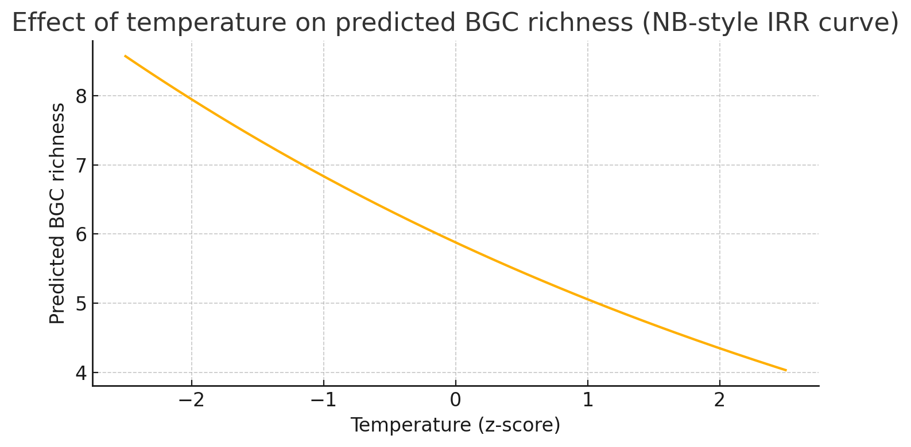
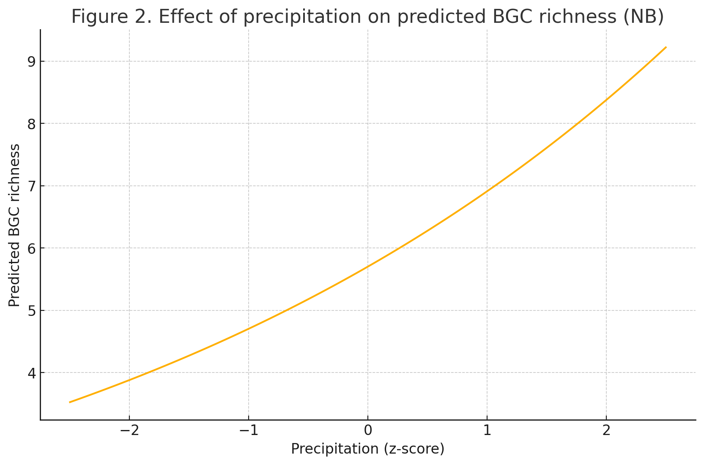
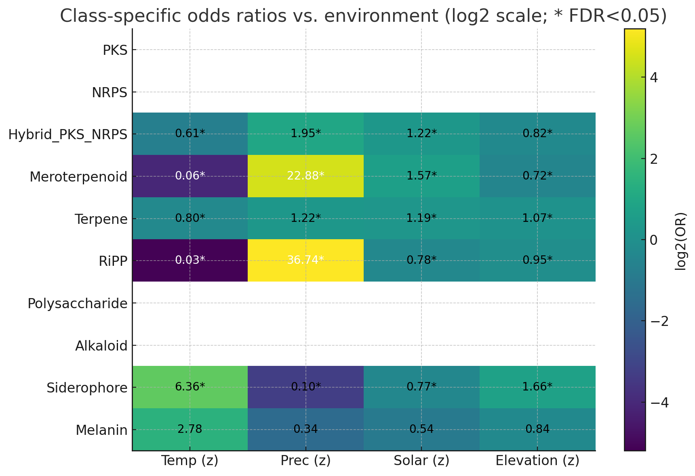

Machine Learning for Natural Product Discovery
Introduction
Earth is estimated to harbor between 2.2 and 3.8 million fungal species, with some estimates extending to 5 million (Hawksworth & Lücking, 2017). Yet, only ~148,000 fungal species have been formally described, and even fewer have fully sequenced, publicly available genomes. This vast unexplored diversity is an untapped resource for natural product discovery, given the central role of fungi in producing bioactive small molecules such as Penicillin (antibiotic), Cyclosporin A (immunosuppressant), and Lovastatin (cholesterol-lowering agent). These compounds, encoded by biosynthetic gene clusters (BGCs), have transformed medicine, agriculture, and biotechnology.
Despite their promise, fungal BGC discovery lags far behind bacterial BGC research. Challenges include larger and more repetitive genomes, complex gene regulation, sparse labeling of fungal BGCs, and the absence of fungal-specific prediction workflows. Current tools such as antiSMASH and DeepBGC, which are designed primarily for bacteria, often underperform on fungi. There is no streamlined, reproducible pipeline that can take a newly sequenced fungal genome (from research labs or citizen scientists) and generate high-confidence BGC predictions ready for drug discovery triage.
This capstone addresses that gap by developing a fungal-specific machine learning pipeline that links raw genome assemblies to BGC predictions in a workflow. The approach requires little manual reconfiguration beyond basic quality control and is designed to democratize fungal natural product discovery for both professional scientists and amateur mycologists.
Beyond prediction, we explore ecological drivers of BGC diversity, testing whether certain environmental niches are enriched for specific BGC classes or higher overall BGC richness. These insights can guide targeted sampling in ecosystems with the greatest potential for chemically novel metabolites.
Data Engineering
The success of this project depended on assembling three distinct but interlinked data resources: reference BGCs from curated repositories, whole-genome assemblies and annotations from publicly available fungal sequencing efforts, and ecological context data derived from geo-referenced observations and environmental variables. Each dataset required custom ingestion pipelines, specific filtering and cleaning steps, and final organization into a standardized storage architecture to support reproducible downstream analysis.
For reference BGC data, we downloaded all biosynthetic gene cluster files from the Minimum Information about a Biosynthetic Gene cluster (MIBiG) repository, which included both GenBank (.gbk) sequence files and associated metadata in JSON format. Because the majority of BGCs in MIBiG are derived from bacteria and archaea, we implemented a custom filtering workflow to isolate fungal-only clusters. This step used a LangChain wrapper connected to the GPT‑3.5‑turbo API to evaluate organism metadata (species name, taxonomy fields, and literature references) and classify whether the source organism was fungal. Only entries with clear fungal origin were retained, resulting in a curated collection of ~500 high-confidence fungal BGC snippets used as positive training examples and for downstream modeling. All retained entries were indexed by accession ID and stored locally, preserving original metadata for reference.
Approximately 200 whole-genome fungal assemblies and annotations were obtained from the Joint Genome Institute (JGI) MycoCosm portal. Because the JGI interface is built on a JavaServer Faces (JSF) framework and does not expose static download links, we implemented a custom scraper that interacted directly with the JGI Search and Download APIs. The scraper authenticated using session cookies and iteratively queried the search API for fungal projects. For each organism, files were filtered using prioritized suffix matching to identify genome assemblies (.fna or .fasta), protein sequences (.faa), and gene annotation files (.gff). Organisms containing all three file types were classified as “full-featured,” while those with assemblies only were labeled “predictive-only.” All results were logged in JSON manifests to ensure reproducibility and progress tracking. Download requests were then submitted through the JGI download API, which allowed automated recovery of files even when some had been archived, by submitting restore requests programmatically. All downloaded files were saved in a standardized folder hierarchy, extracted, and renamed to follow a consistent format (e.g., SpeciesName_proteins.faa). This structure provided reliable and unambiguous access to genomes and annotations during model training and testing.
To integrate ecological context, we collected geo-referenced fungal observation data from the iNaturalist API. Species names were resolved to their taxonomic identifiers to ensure correct species-level matching, and observations were filtered to retain only valid latitude and longitude coordinates. Additionally, the species classifications had to have been verified by at least two community contributors to be included in our dataset. The observational coordinates were then used to extract environmental variables, including temperature, precipitation, solar radiation (all from the WorldClim v2.1 dataset), and elevation, sampled using Rasterio. This produced an enriched table linking species observations to climatic and topographic conditions, resulting in a dataset of fungal occurrences annotated with both geographic and environmental variables.
All resulting datasets were organized into a species-centric directory structure, with each genome stored in its own folder containing the assembly, protein, and gene files; BGC reference snippets organized by accession; ecological data stored as CSV tables; and JSON manifests tracking file provenance and classification. This standardized storage approach enables fully automated genome-to-BGC prediction workflows and ecological enrichment analyses. Together, these integrated data resources provide the foundation for building and testing a fungal-specific machine learning pipeline for BGC discovery and for evaluating the ecological factors associated with BGC diversity.
Machine Learning
Protein-coding sequences from each genome were scanned with hmmscan (HMMER) against the Pfam-A database, producing domain annotations for each protein. These were aggregated into a binary presence/absence matrix of 1,671 unique Pfam domains. Each row represented a genomic region; columns indicated domain presence. The training set consisted of ~338 genomic sequences containing BGC and non-BGC windows, with 162 genomic sequences reserved for testing. On average, genomes contained 6-12 BGCs (median = 8). We trained a random forest classifier– for its robustness to high-dimensional sparse features (in this case, sparsity refers to how rarely BGCs are found in genomes), interpretability, and ability to model non-linear co-occurrence patterns of domains.
Our random forest model performed exceptionally well compared to historic baselines pulled from literature. The model’s overall accuracy was 0.982, and had a ROC-AUC of 0.972 (published fungal ROC-AUCs for DeepBGC were typically between 0.88 and 0.92), and a PR-AUC of 0.958. The model’s conservative bias makes it well-suited for triaging candidates where false positives are costly.
Ecological Analysis
We defined BGC richness as the count of distinct BGC classes (0–10) per observation and modeled richness using a Negative Binomial GLM after confirming overdispersion (Pearson χ²/df ≈ 1.61). Class-specific presence/absence was modeled with logistic regression, and we applied Benjamini–Hochberg false discovery rate control (q < 0.05) separately for each predictor. To aid interpretability, all ecological predictors were standardized, and figures paired the fitted relationships with the underlying points to show variance and clustering.
In the richness models, precipitation was positively associated with BGC richness (IRR = 1.21; ~21% increase per +1 SD; 95% CI ≈ 1.05–1.40), whereas temperature showed a negative association (IRR = 0.86; ~14% decrease per +1 SD). Elevation (IRR = 0.95; ~5% decrease) and solar radiation (IRR = 1.03; ~3% increase) exhibited comparatively small effects. Plots included both model fit lines and individual observations to illustrate the dispersion of points around the fitted trends.
Class-specific analyses revealed that meroterpenoid-like and RiPP clusters displayed extreme versions of the precipitation and temperature patterns seen in the richness models (precipitation OR ≈ 12; temperature OR ≈ 0.11–0.10; all q < 0.05). When we excluded observations containing either meroterpenoid-like or RiPP clusters and re-fit the richness models, the precipitation and temperature effects were no longer significant, indicating that the overall richness–environment signal was largely driven by these two classes. In contrast, siderophores showed the opposite ecological pattern, with higher odds at increased temperature and elevation and lower odds with greater precipitation and solar radiation.
Figures
Figure 1. BGC richness vs temperature (Negative Binomial model fits; individual points shown; shaded = 95% CI) 
Figure 2. BGC richness vs precipitation (Negative Binomial model fits; individual points shown; shaded = 95% CI) 
Figure 3. Heatmap of ORs by BGC class × environmental variable (q<0.05 marked) 
Data Ethics
All datasets (MIBiG, JGI MycoCosm, iNaturalist) were used under stated terms. No personally identifiable information from iNaturalist was stored. Access tokens and cookies were kept outside the codebase.
We did not adjust for uneven observation density across ecological regions, which is a limitation that could bias results toward habitats where observers are more active. Future work should incorporate per-capita measures or sampling-effort offsets in models.
All scripts were logged, versioned, and reproducible. LLMs were used only for metadata triage of MIBiG entries, with human review, and LLM calls were batched in order to limit environmental impact.
Conclusion
We deliver an end-to-end fungal BGC prediction pipeline that outperforms bacterial-tuned baselines and enables ecological context analysis. Overall BGC richness is difficult to predict from environmental predictors alone; however, specific classes– particularly meroterpenoid-like and RiPP clusters– exhibit strong and consistent associations with precipitation and temperature. When fungi containing these two classes are excluded, the richness-environment relationships largely disappear, indicating that the aggregate richness signal is driven primarily by these categories.
Ecologically, meroterpenoid-like and RiPP clusters are enriched in wet, low-temperature settings, suggesting that sampling in moist microhabitats during wet seasons will maximize recovery of these chemistries, whereas siderophores align with drier, higher-elevation environments, guiding targeted searches for iron-scavenging pathways. These patterns provide practical guidance for concentrating drug-discovery efforts in ecosystems most likely to yield chemically novel metabolites, underscoring the societal and medical value of exploring fungal BGC diversity.
Future work should expand curated fungal BGC labels, incorporate synteny and sequence-context features via deep learning, adjust ecological models for uneven observation density, validate predictions with metabolomics, and release an open, citizen-science-friendly workflow.
Works Cited
Hawksworth, D. L., & Lücking, R. (2017). Fungal diversity revisited: 2.2 to 3.8 million species. Microbiology Spectrum, 5(4), FUNK-0052-2016. https://doi.org/10.1128/microbiolspec.FUNK-0052-2016
Hannigan, G. D., Prihoda, D., Palicka, A., Soukup, J., Klempir, O., Rampula, L., Durcak, J., Wurst, M., Kotowski, J., Chang, D., Wang, R., Piizzi, G., Temesi, G., Hazuda, D. J., Woelk, C. H., & Bitton, D. A. (2019). A deep learning genome-mining strategy for biosynthetic gene cluster prediction. Nucleic Acids Research, 47(18), e110. https://doi.org/10.1093/nar/gkz654
Fick, S. E., & Hijmans, R. J. (2017). WorldClim 2: New 1-km spatial resolution climate surfaces for global land areas. International Journal of Climatology, 37(12), 4302–4315. https://doi.org/10.1002/joc.5086
Grigoriev, I. V., Nikitin, R., Haridas, S., Kuo, A., Ohm, R. A., Mondo, S. J., Salamov, A. A., Zimmerman, A., Korzeniewski, F., Smirnova, T., Nordberg, H., Dubchak, I., & Shabalov, I. (2014). MycoCosm portal: Gearing up for 1000 fungal genomes. Nucleic Acids Research, 42(D1), D699–D704. https://doi.org/10.1093/nar/gkt1183
Kautsar, S. A., van der Hooft, J. J. J., de Ridder, D., & Medema, M. H. (2020). MIBiG 2.0: A repository for biosynthetic gene clusters of known function. Nucleic Acids Research, 48(D1), D454–D458. https://doi.org/10.1093/nar/gkz882
Di Cecco, G. J., Barve, V., Belitz, M. W., Stucky, B. J., Guralnick, R. P., & Hurlbert, A. H. (2021). Observing the observers: How participants contribute data to iNaturalist and implications for biodiversity science. BioScience, 71(11), 1179–1188. https://doi.org/10.1093/biosci/biab093